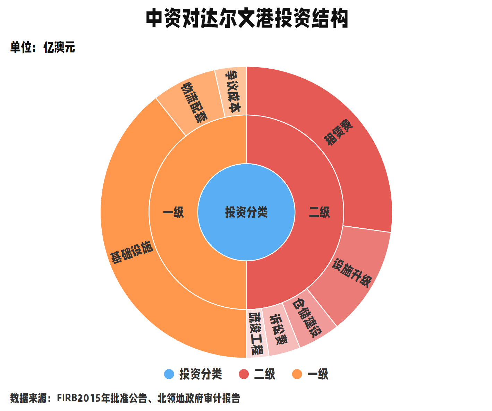

达尔文港
澳大利亚北领地
达尔文港：
契约精神遭遇地缘政治寒流
2025年5月，澳大利亚官员旧事重提，以所谓"安全风险"为由，威胁要从中国岚桥集团处收回北部达尔文港的经营权。
这一争议源于2015年澳大利亚北领地政府与岚桥集团的租赁协议，该协议赋予岚桥集团99年港口经营权。
自2002年以来，中国对外投资流量增长超过65倍，连续12年位列全球前三。作为全球对外直接投资的重要来源国，中国企业的投资遍布世界各地。达尔文港也是其中之一。
那么这些投资具体流向了哪里？下图清晰展示了岚桥集团对达尔文港的投资明细——绝大部分用于港口基础设施升级，而非所谓“安全威胁”。
岚桥集团接手后，达尔文港吞吐量飙升6倍，从亏损转为连续8年盈利，成为连接亚洲的黄金枢纽。这股活力也汇入了澳大利亚全国贸易增长的洪流之中。中国不仅是澳大利亚最大的出口市场，也是其最重要的进口来源国之一。根据澳大利亚统计局的专项调查，2020-2021年，超过6.9万家澳大利亚企业从中国进口商品，占总进口额的28%。